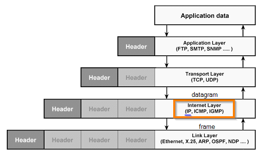

Internet Layer-Internet Protocol (IP)
Layer 3 of the ISO/OSI model
Layer 2 of the TCP/IP model
How we see in the above image the
Internet Protocol (IP) is the protocol that runs on the Internet layer of the Internet Protocol suite (also called TCP/IP)
What is supposed to do the internet protocol?The Internet protocol(IP) is in charge of delivering the
datagrams (IP packets are called datagrams) to the hosts involved in a communication, and it uses IP addresses to identify a host.